一、Spring Web MVC 与 Spring Bean 注解
Spring Web MVC 注解
@RequestMapping
@RequestMapping注解的主要用途是将Web请求与请求处理类中的方法进行映射。Spring MVC和Spring WebFlux都通过RquestMappingHandlerMapping和RequestMappingHndlerAdapter两个类来提供对@RequestMapping注解的支持。 @RequestMapping注解对请求处理类中的请求处理方法进行标注；@RequestMapping注解拥有以下的六个配置属性：- value:映射的请求URL或者其别名
- method:兼容HTTP的方法名
- params:根据HTTP参数的存在、缺省或值对请求进行过滤
- header:根据HTTP Header的存在、缺省或值对请求进行过滤
- consume:设定在HTTP请求正文中允许使用的媒体类型
- product:在HTTP响应体中允许使用的媒体类型
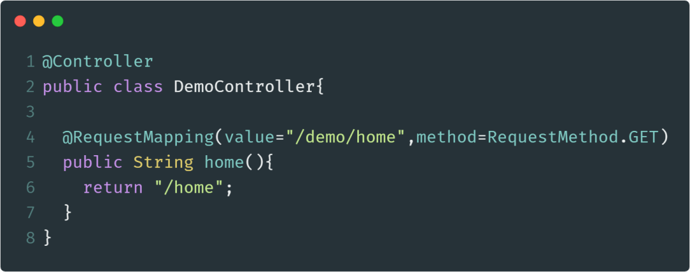
@RequestMapping还可以对类进行标记，这样类中的处理方法在映射请求路径时，会自动将类上@RequestMapping设置的value拼接到方法中映射路径之前，如下：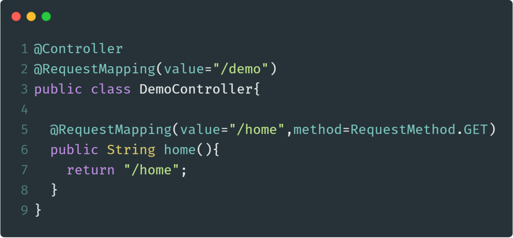
@RequestBody
@RequestBody在处理请求方法的参数列表中使用，它可以将请求主体中的参数绑定到一个对象中，请求主体参数是通过HttpMessageConverter传递的，根据请求主体中的参数名与对象的属性名进行匹配并绑定值。此外，还可以通过@Valid注解对请求主体中的参数进行校验。 下面是一个使用@RequestBody的示例：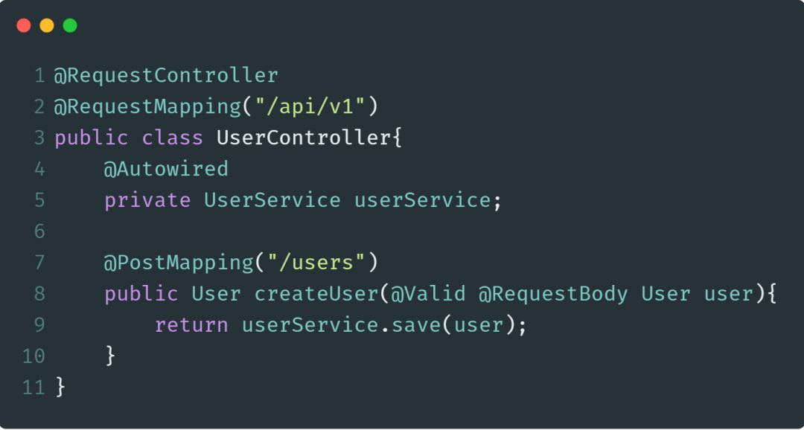
@GetMapping
@GetMapping注解用于处理HTTP GET请求，并将请求映射到具体的处理方法中。具体来说，@GetMapping是一个组合注解，它相当于是@RequestMapping(method=RequestMethod.GET)的快捷方式。 下面是@GetMapping的一个使用示例：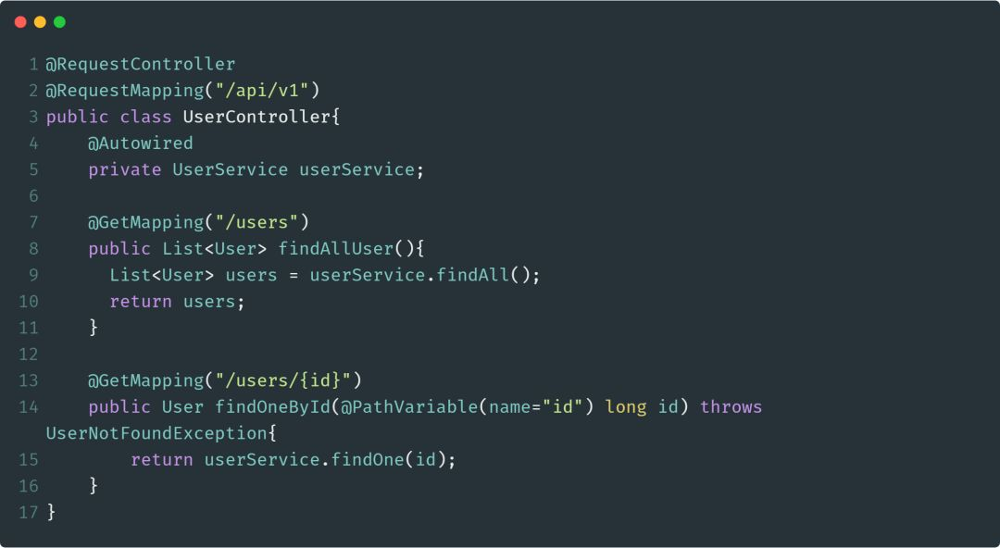
@PostMapping
@PostMapping注解用于处理HTTP POST请求，并将请求映射到具体的处理方法中。@PostMapping与@GetMapping一样，也是一个组合注解，它相当于是@RequestMapping(method=HttpMethod.POST)的快捷方式。 下面是使用@PostMapping的一个示例：
<
@PutMapping
@PutMapping注解用于处理HTTP PUT请求，并将请求映射到具体的处理方法中，@PutMapping是一个组合注解，相当于是@RequestMapping(method=HttpMethod.PUT)的快捷方式。 下面是使用@PutMapping的一个示例：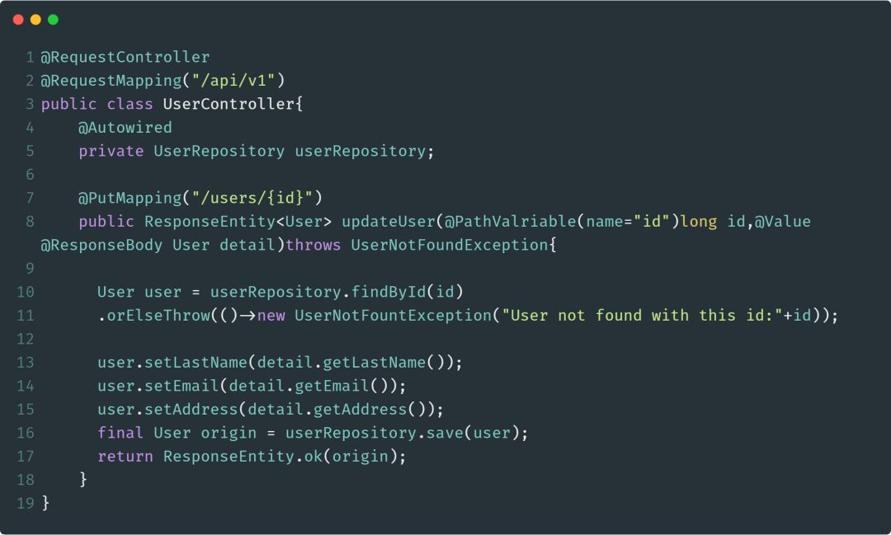
<
@DeleteMapping
@DeleteMapping注解用于处理HTTP DELETE请求，并将请求映射到删除方法中。@DeleteMapping是一个组合注解，它相当于是@RequestMapping(method=HttpMethod.DELETE)的快捷方式。 下面是使用@DeleteMapping的一个示例：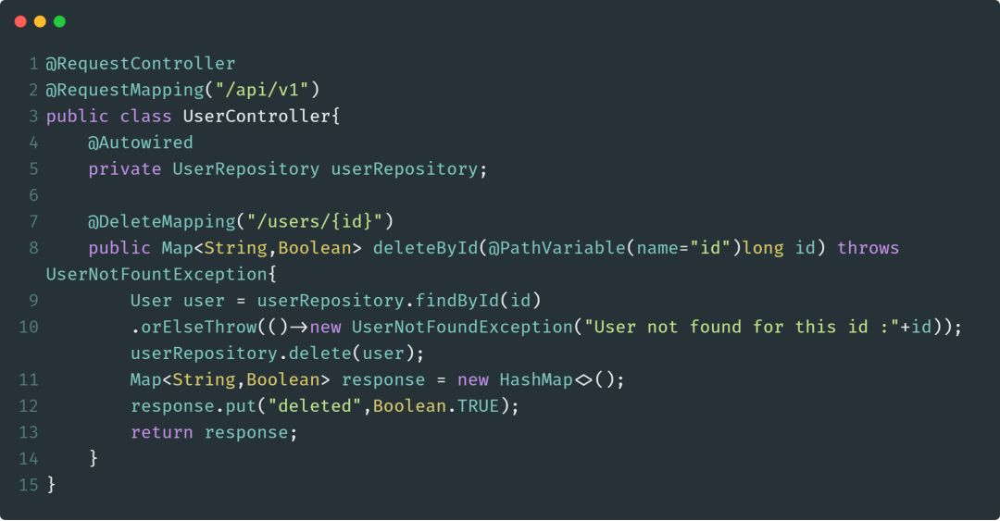
<
@PatchMapping
@PatchMapping注解用于处理HTTP PATCH请求，并将请求映射到对应的处理方法中。@PatchMapping相当于是@RequestMapping(method=HttpMethod.PATCH)的快捷方式。 下面是一个简单的示例：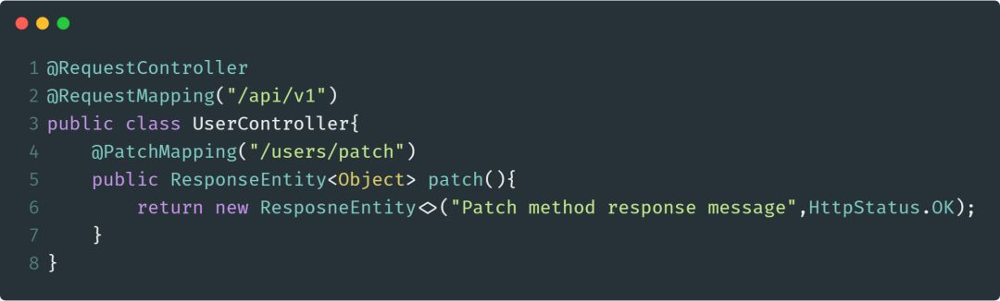
@ControllerAdvice
@ControllerAdvice是@Component注解的一个延伸注解，Spring会自动扫描并检测被@ControllerAdvice所标注的类。@ControllerAdvice需要和@ExceptionHandler、@InitBinder以及@ModelAttribute注解搭配使用，主要是用来处理控制器所抛出的异常信息。 首先，我们需要定义一个被@ControllerAdvice所标注的类，在该类中，定义一个用于处理具体异常的方法，并使用@ExceptionHandler注解进行标记。 此外，在有必要的时候，可以使用@InitBinder在类中进行全局的配置，还可以使用@ModelAttribute配置与视图相关的参数。使用@ControllerAdvice注解，就可以快速的创建统一的，自定义的异常处理类。 下面是一个使用@ControllerAdvice的示例代码：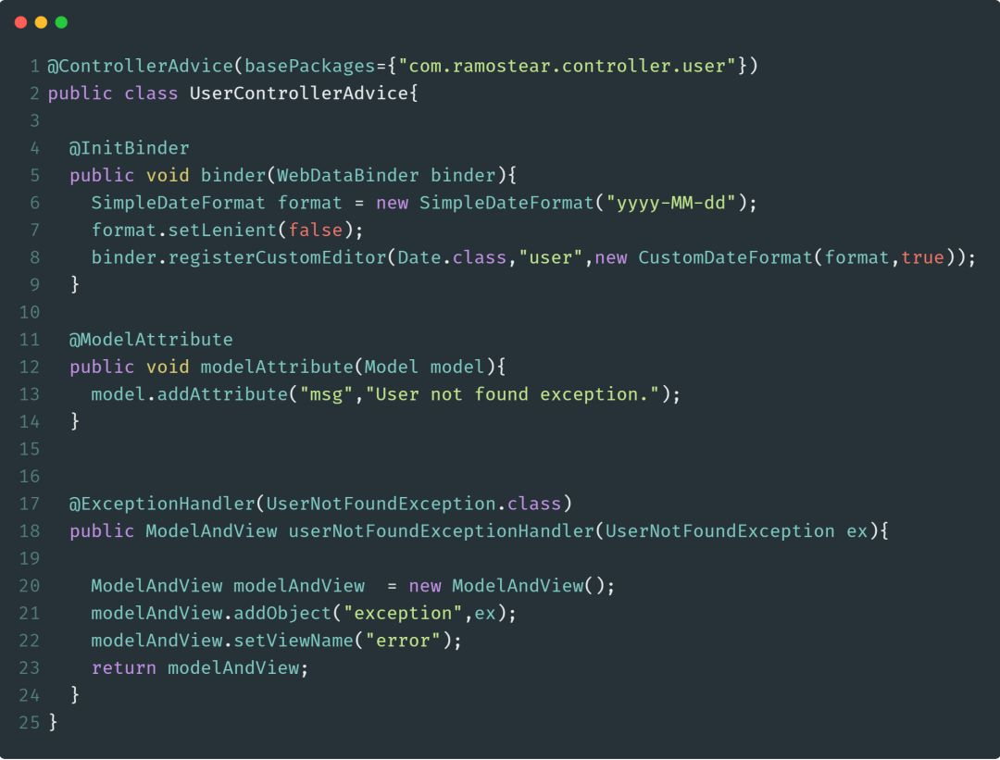
@ResponseBody
@ResponseBody会自动将控制器中方法的返回值写入到HTTP响应中。特别的，@ResponseBody注解只能用在被@Controller注解标记的类中。如果在被@RestController标记的类中，则方法不需要使用@ResponseBody注解进行标注。@RestController相当于是@Controller和@ResponseBody的组合注解。 下面是使用该注解的一个示例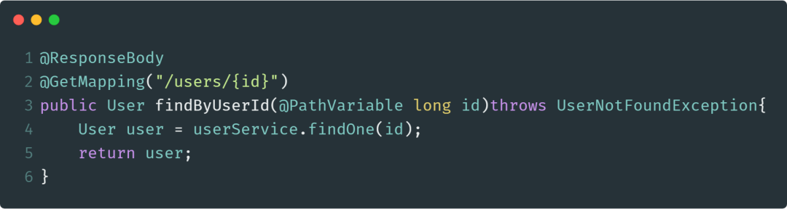
@ExceptionHandler
@ExceptionHander注解用于标注处理特定类型异常类所抛出异常的方法。当控制器中的方法抛出异常时，Spring会自动捕获异常，并将捕获的异常信息传递给被@ExceptionHandler标注的方法。 下面是使用该注解的一个示例：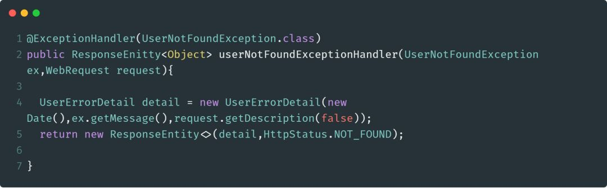
@ResponseStatus
@ResponseStatus注解可以标注请求处理方法。使用此注解，可以指定响应所需要的HTTP STATUS。特别地，我们可以使用HttpStauts类对该注解的value属性进行赋值。 下面是使用@ResponseStatus注解的一个示例：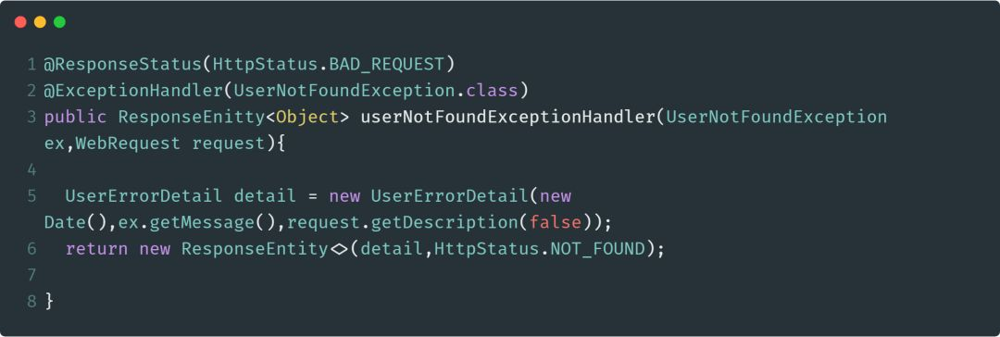
@PathVariable
@PathVariable注解是将方法中的参数绑定到请求URI中的模板变量上。可以通过@RequestMapping注解来指定URI的模板变量，然后使用@PathVariable注解将方法中的参数绑定到模板变量上。 特别地，@PathVariable注解允许我们使用value或name属性来给参数取一个别名。下面是使用此注解的一个示例：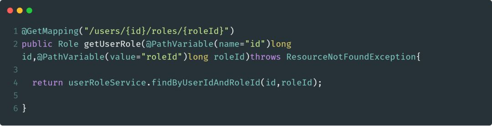
模板变量名需要使用{ }进行包裹，如果方法的参数名与URI模板变量名一致，则在@PathVariable中就可以省略别名的定义。 下面是一个简写的示例：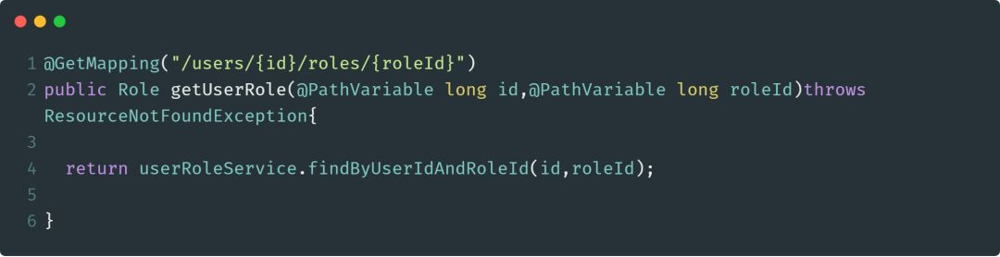
提示：如果参数是一个非必须的，可选的项，则可以在@PathVariable中设置require = false@RequestParam
@RequestParam注解用于将方法的参数与Web请求的传递的参数进行绑定。使用@RequestParam可以轻松的访问HTTP请求参数的值。 下面是使用该注解的代码示例：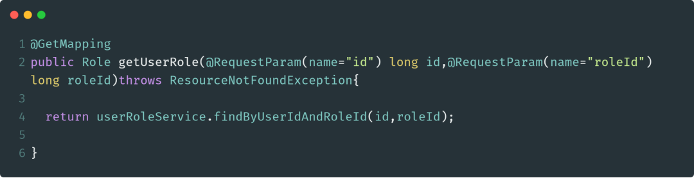
该注解的其他属性配置与@PathVariable的配置相同，特别的，如果传递的参数为空，还可以通过defaultValue设置一个默认值。示例代码如下：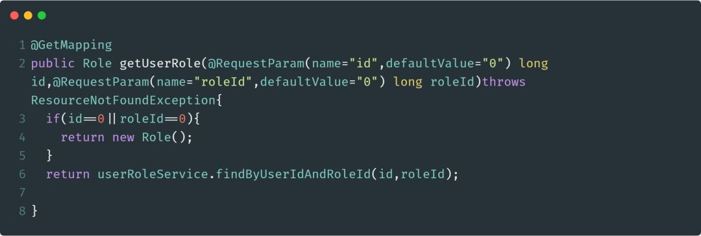
@Controller
@Controller是@Component注解的一个延伸， 会自动扫描并配置被该注解标注的类。此注解用于标注Spring MVC的控制器。下面是使用此注解的示例代码：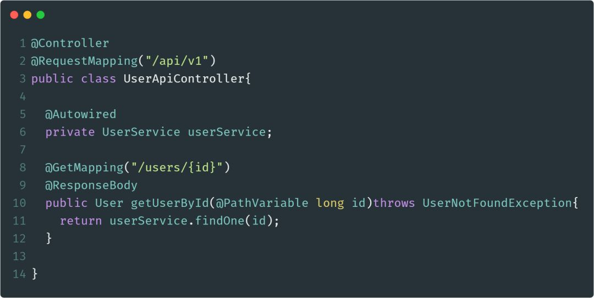
@RestController
@RestController是在Spring 4.0开始引入的，这是一个特定的控制器注解。此注解相当于@Controller和@ResponseBody的快捷方式。当使用此注解时，不需要再在方法上使用@ResponseBody注解。 下面是使用此注解的示例代码：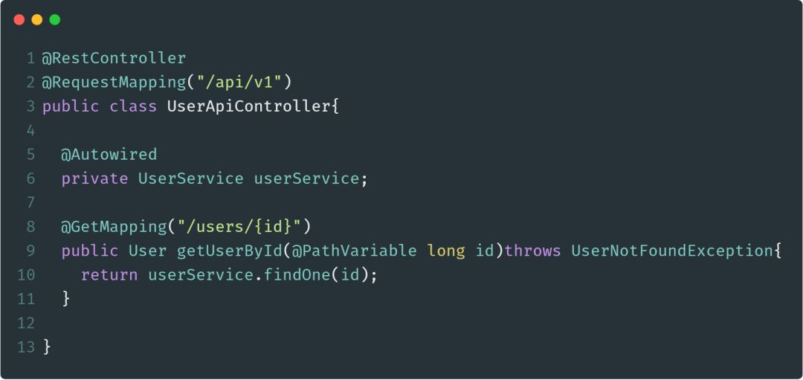
@ModelAttribute
通过此注解，可以通过模型索引名称来访问已经存在于控制器中的model。下面是使用此注解的一个简单示例：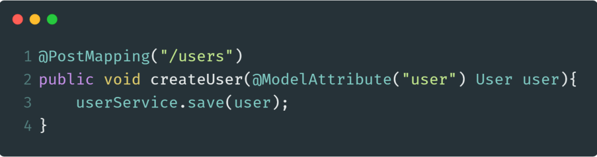
与@PathVariable和@RequestParam注解一样，如果参数名与模型具有相同的名字，则不必指定索引名称，简写示例如下：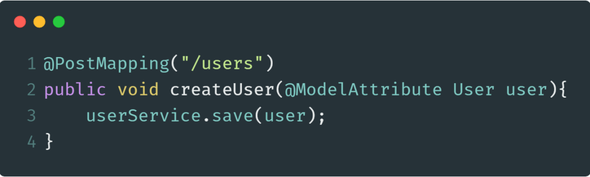
特别地，如果使用@ModelAttribute对方法进行标注，Spring会将方法的返回值绑定到具体的Model上。示例如下：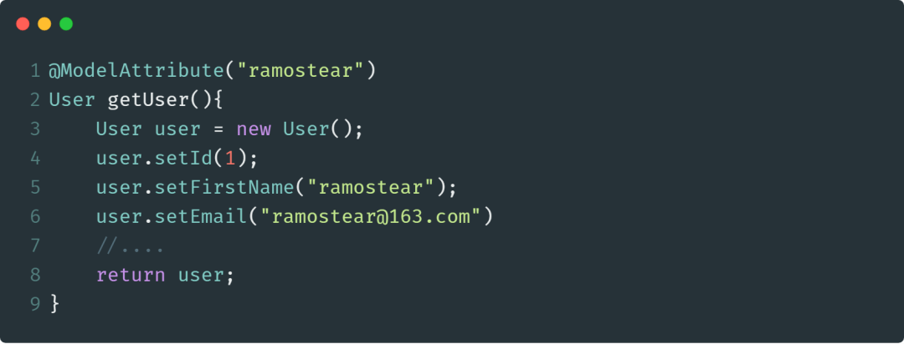
在Spring调用具体的处理方法之前，被@ModelAttribute注解标注的所有方法都将被执行。@CrossOrigin
@CrossOrigin注解将为请求处理类或请求处理方法提供跨域调用支持。如果我们将此注解标注类，那么类中的所有方法都将获得支持跨域的能力。使用此注解的好处是可以微调跨域行为。使用此注解的示例如下：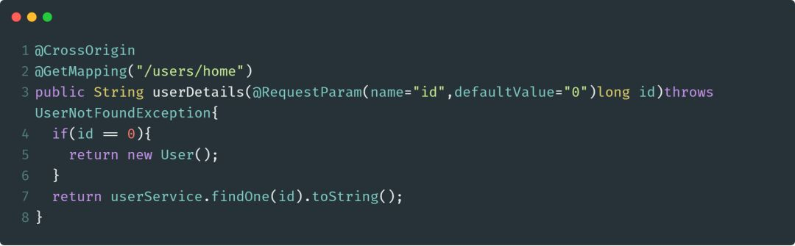
@InitBinder
@InitBinder注解用于标注初始化**WebDataBinider**的方法，该方法用于对Http请求传递的表单数据进行处理，如时间格式化、字符串处理等。下面是使用此注解的示例：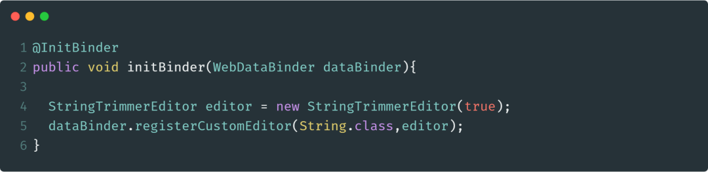
二、Spring Bean 注解
在本小节中，主要列举与Spring Bean相关的4个注解以及它们的使用方式。@ComponentScan
@ComponentScan注解用于配置Spring需要扫描的被组件注解注释的类所在的包。可以通过配置其basePackages属性或者value属性来配置需要扫描的包路径。value属性是basePackages的别名。此注解的用法如下：@Component
@Component注解用于标注一个普通的组件类，它没有明确的业务范围，只是通知Spring被此注解的类需要被纳入到Spring Bean[容器](https://cloud.tencent.com/product/tke?from_column=20065&from=20065)中并进行管理。此注解的使用示例如下：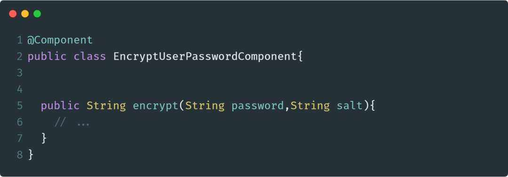
@Service
@Service注解是@Component的一个延伸（特例），它用于标注业务逻辑类。与@Component注解一样，被此注解标注的类，会自动被Spring所管理。下面是使用@Service注解的示例：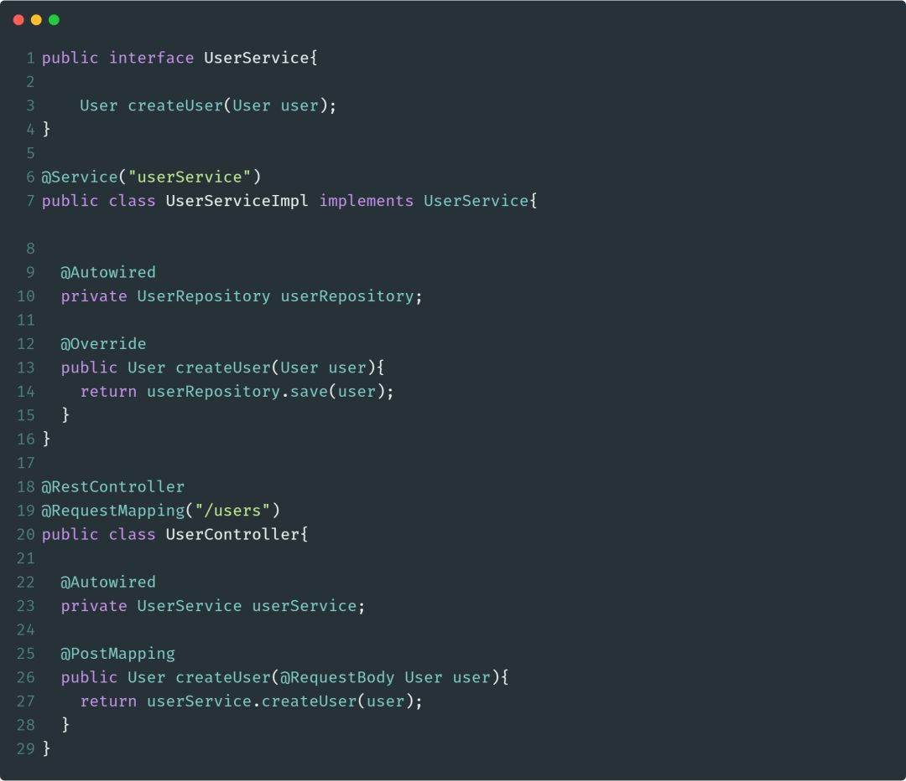
@Repository
@Repository注解也是@Component注解的延伸，与@Component注解一样，被此注解标注的类会被Spring自动管理起来，@Repository注解用于标注DAO层的数据持久化类。此注解的用法如下：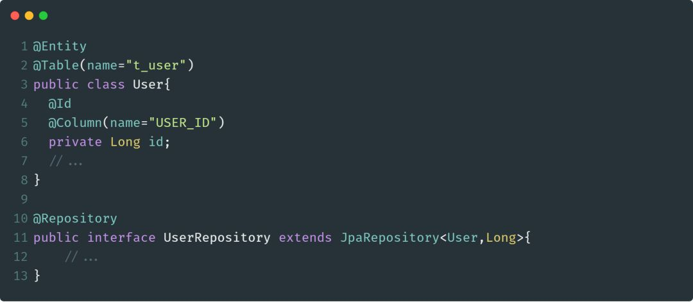
三、Spring Dependency Inject 与 Bean Scops注解
Spring DI注解
@DependsOn
@DependsOn注解可以配置Spring IoC容器在初始化一个Bean之前，先初始化其他的Bean对象。下面是此注解使用示例代码：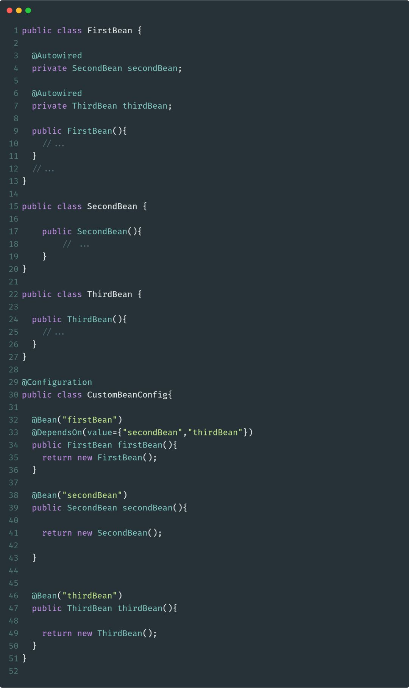
@Bean
@Bean注解主要的作用是告知Spring，被此注解所标注的类将需要纳入到Bean管理工厂中。@Bean注解的用法很简单，在这里，着重介绍@Bean注解中initMethod和destroyMethod的用法。示例如下：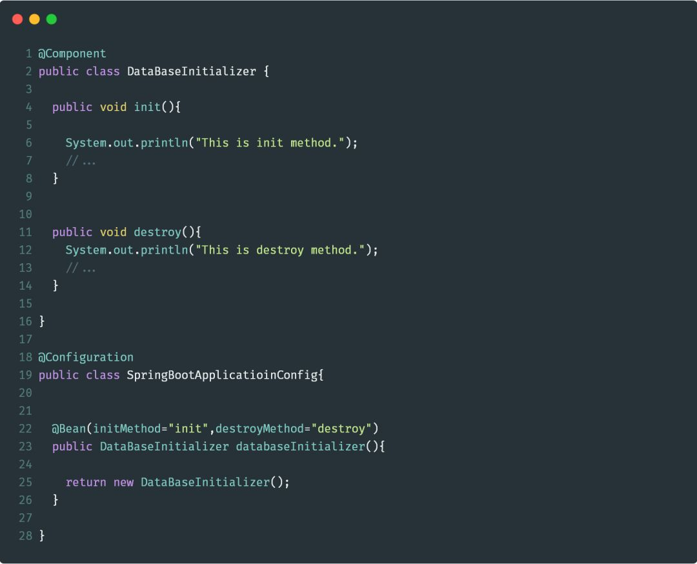
Scops注解
@Scope
@Scope注解可以用来定义@Component标注的类的作用范围以及@Bean所标记的类的作用范围。@Scope所限定的作用范围有：singleton、prototype、request、session、globalSession或者其他的自定义范围。这里以prototype为例子进行讲解。 当一个Spring Bean被声明为prototype（原型模式）时，在每次需要使用到该类的时候，Spring IoC容器都会初始化一个新的改类的实例。在定义一个Bean时，可以设置Bean的scope属性为prototype：scope=“prototype”,也可以使用@Scope注解设置，如下：1 | @Scope(value=ConfigurableBeanFactory.SCOPE_PROPTOTYPE) |
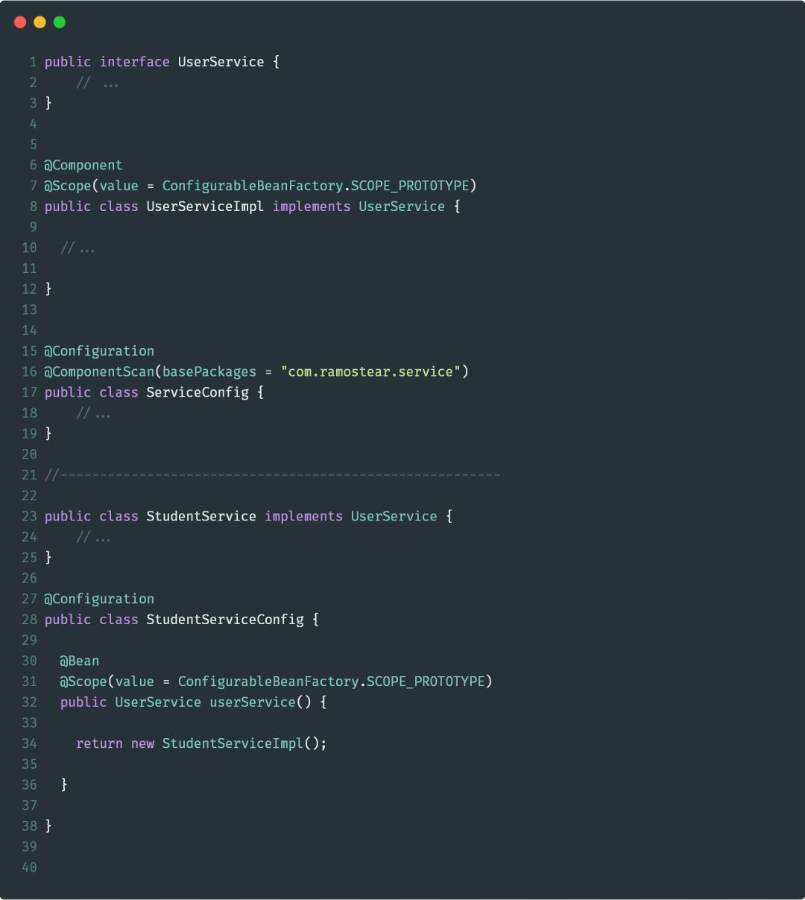
@Scope 单例模式
当@Scope的作用范围[设置成Singleton时](https://cloud.tencent.com/developer/tools/blog-entry?target=http%3A%2F%2Fmp.weixin.qq.com%2Fs%3F__biz%3DMzI4Njc5NjM1NQ%3D%3D%26mid%3D2247493542%26idx%3D2%26sn%3D43a97be735b81408b35a00d0adaf75bf%26chksm%3Debd5d88adca2519cd66108625b1561983a5a40b476d377b24b6c7f8c5af4331d5d790a76be07%26scene%3D21%23wechat_redirect&source=article&objectId=1885299)，被此注解所标注的类只会被Spring IoC容器初始化一次。在默认情况下，Spring IoC容器所初始化的类实例都为singleton。同样的原理，此情形也有两种配置方式，示例代码如下：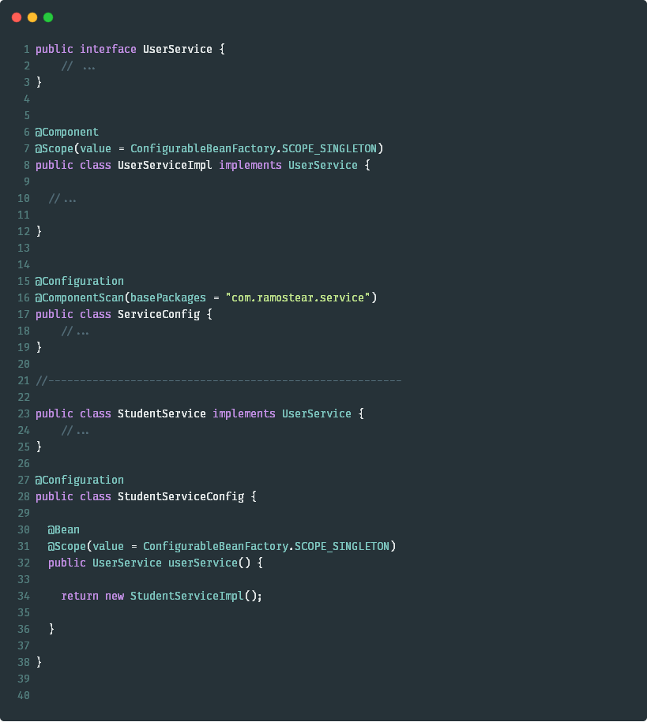
四、容器配置注解
@Autowired
@Autowired注解用于标记Spring将要解析和注入的依赖项。此注解可以作用在构造函数、字段和setter方法上。作用于构造函数
下面是@Autowired注解标注构造函数的使用示例：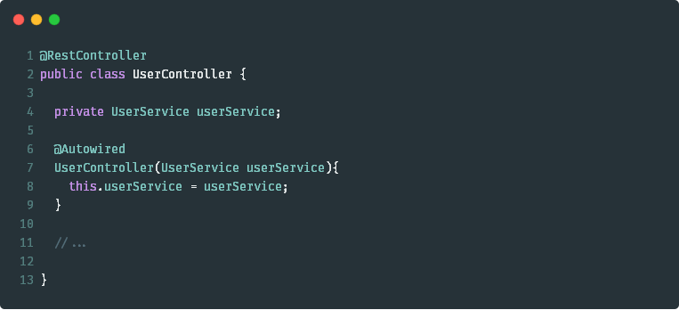
作用于setter方法
下面是@Autowired注解标注setter方法的示例代码：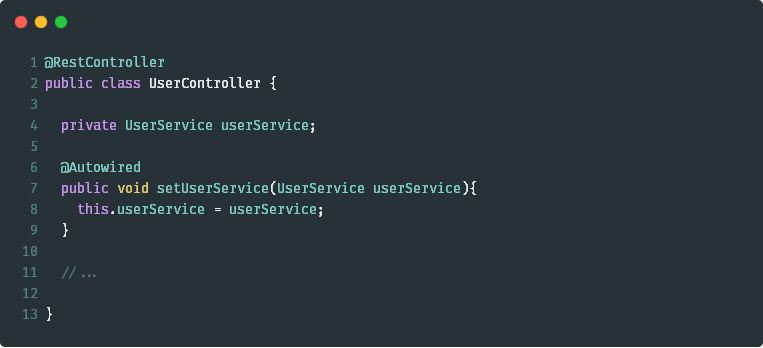
作用于字段
@Autowired注解标注字段是最简单的，只需要在对应的字段上加入此注解即可，示例代码如下：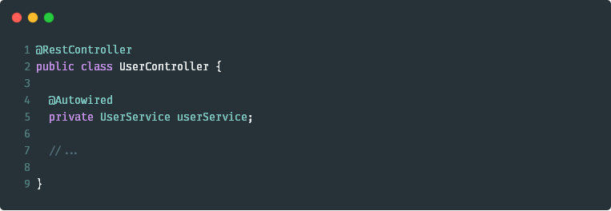
@Primary
当系统中需要配置多个具有相同类型的bean时，@Primary可以定义这些Bean的优先级。下面将给出一个实例代码来说明这一特性：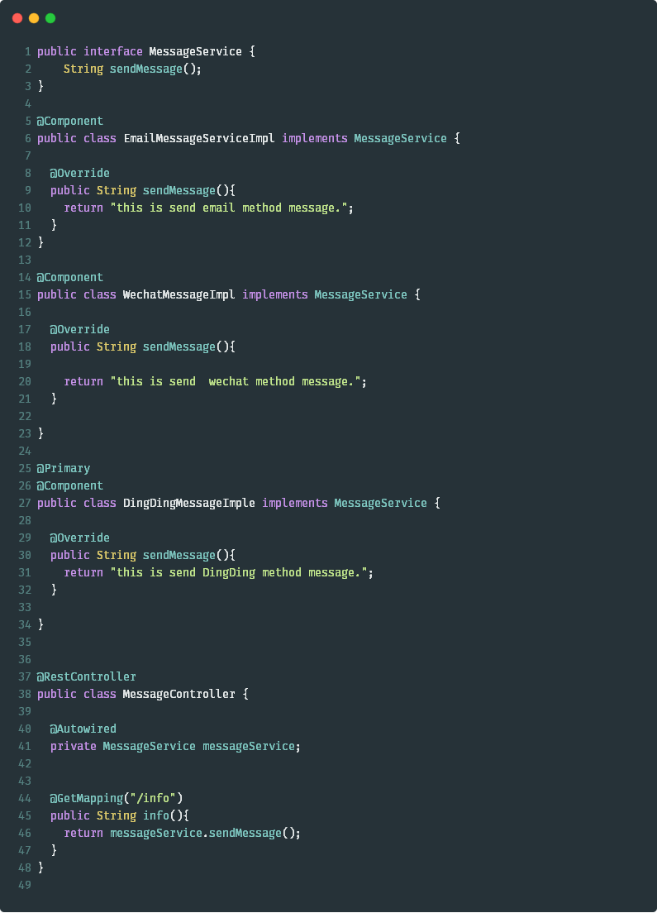
输出结果：1 | this is send DingDing method message. |
@PostConstruct与@PreDestroy
值得注意的是，这两个注解不属于Spring,它们是源于JSR-250中的两个注解，位于common-annotations.jar中。@PostConstruct注解用于标注在Bean被Spring初始化之前需要执行的方法。@PreDestroy注解用于标注Bean被销毁前需要执行的方法。下面是具体的示例代码：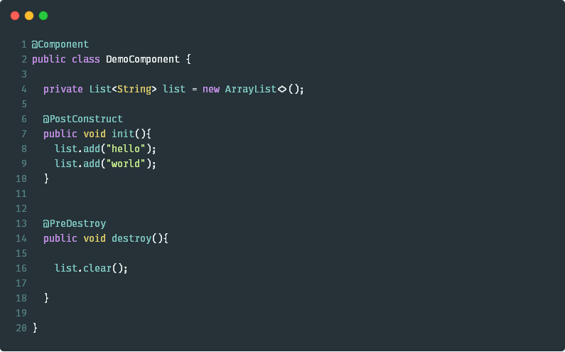
@Qualifier
当系统中存在同一类型的多个Bean时，@Autowired在进行依赖注入的时候就不知道该选择哪一个实现类进行注入。此时，我们可以使用@Qualifier注解来微调，帮助[@Autowired选择正确的依赖项](https://cloud.tencent.com/developer/tools/blog-entry?target=http%3A%2F%2Fmp.weixin.qq.com%2Fs%3F__biz%3DMzI4Njc5NjM1NQ%3D%3D%26mid%3D2247508834%26idx%3D1%26sn%3Dccf444814b629a320c3b979c71df2bc0%26chksm%3Debd59c4edca21558b045a819b4d03500164ae7bea099af4725ea1f0d6bd795ef2b03fd509fcd%26scene%3D21%23wechat_redirect&source=article&objectId=1885299)。下面是一个关于此注解的代码示例：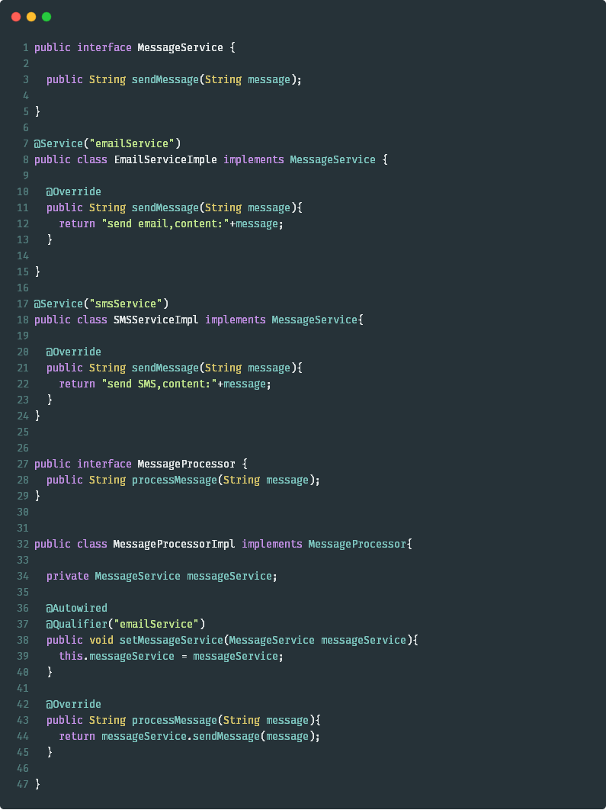
五、Spring Boot注解
@SpringBootApplication
@SpringBootApplication注解是一个快捷的配置注解，在被它标注的类中，可以[定义一个或多个Bean](https://cloud.tencent.com/developer/tools/blog-entry?target=http%3A%2F%2Fmp.weixin.qq.com%2Fs%3F__biz%3DMzI4Njc5NjM1NQ%3D%3D%26mid%3D2247499001%26idx%3D2%26sn%3Da4e94719a95f22171efd8ff2907fa95a%26chksm%3Debd5c3d5dca24ac3f620be051883c784f062eeee41ac89b53fbd09a8c145c0c0e0d08cdcfc4b%26scene%3D21%23wechat_redirect&source=article&objectId=1885299)，并自动触发自动配置Bean和自动扫描组件。此注解相当于@Configuration、@EnableAutoConfiguration和@ComponentScan的组合。 在Spring Boot应用程序的主类中，就使用了此注解。示例代码如下：1 | @SpringBootApplication |
@EnableAutoConfiguration
@EnableAutoConfiguration注解用于通知Spring，根据当前类路径下引入的依赖包，自动配置与这些依赖包相关的配置项。@ConditionalOnClass与@ConditionalOnMissingClass
这两个注解属于类条件注解，它们根据是否存在某个类作为判断依据来决定是否要执行某些配置。下面是一个简单的示例代码：1 | @Configuration |
@ConditionalOnBean与@ConditionalOnMissingBean
这两个注解属于对象条件注解，根据是否存在某个对象作为依据来决定是否要执行某些配置方法。示例代码如下：1 | @Bean |
@ConditionalOnProperty
@ConditionalOnProperty注解会根据Spring配置文件中的配置项是否满足配置要求，从而决定是否要执行被其标注的方法。示例代码如下：1 | @Bean |
@ConditionalOnResource
此注解用于检测当某个配置文件存在使，则触发被其标注的方法，下面是使用此注解的代码示例：1 | @ConditionalOnResource(resources = "classpath:website.properties") |
@ConditionalOnWebApplication与@ConditionalOnNotWebApplication
这两个注解用于判断当前的应用程序是否是Web应用程序。如果当前应用是Web应用程序，则使用Spring WebApplicationContext,并定义其会话的生命周期。下面是一个简单的示例：1 | @ConditionalOnWebApplication |
@ConditionalExpression
此注解可以让我们控制更细粒度的基于表达式的配置条件限制。当表达式满足某个条件或者表达式为真的时候，将会执行被此注解标注的方法。1 | @Bean |
@Conditional
@Conditional注解可以控制更为复杂的配置条件。在Spring内置的条件控制注解不满足应用需求的时候，可以使用此注解定义自定义的控制条件，以达到自定义的要求。下面是使用该注解的简单示例：1 | @Conditioanl(CustomConditioanl.class) |